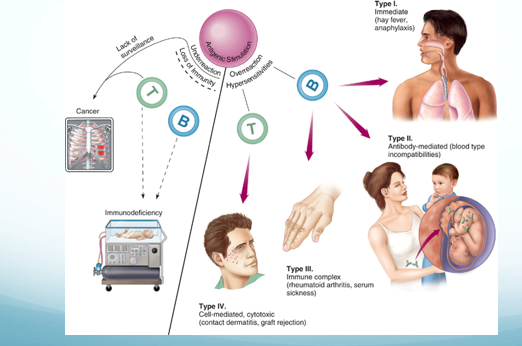
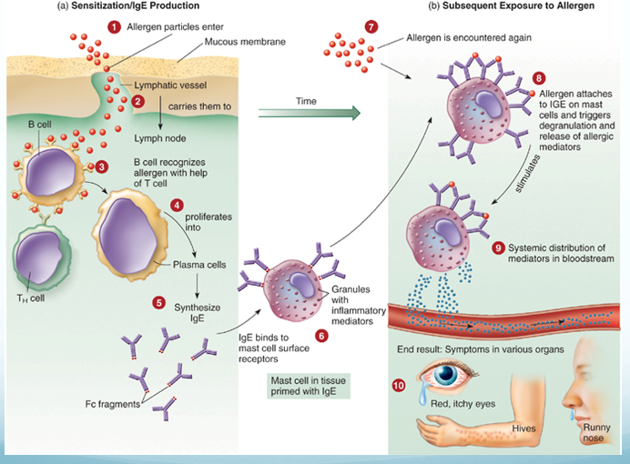
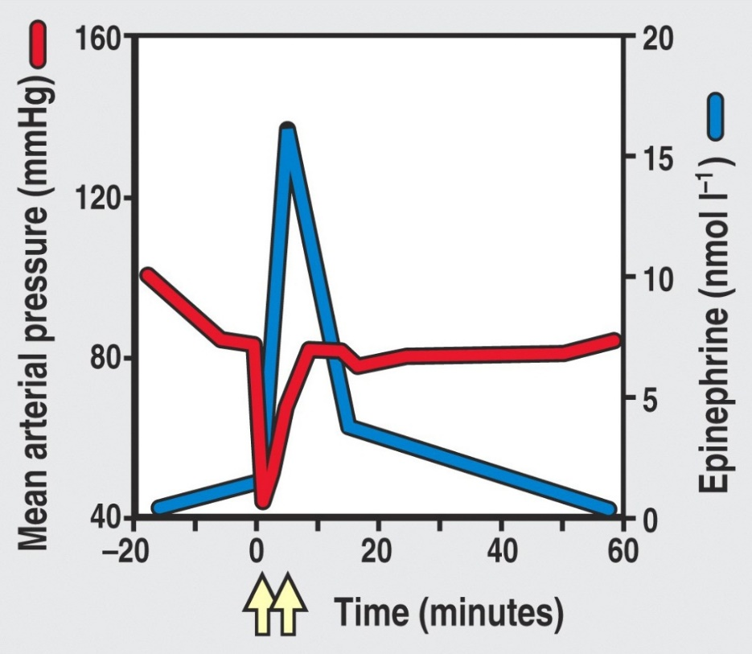
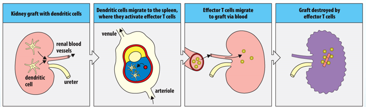
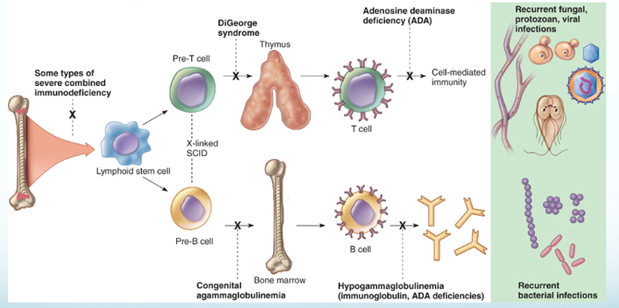
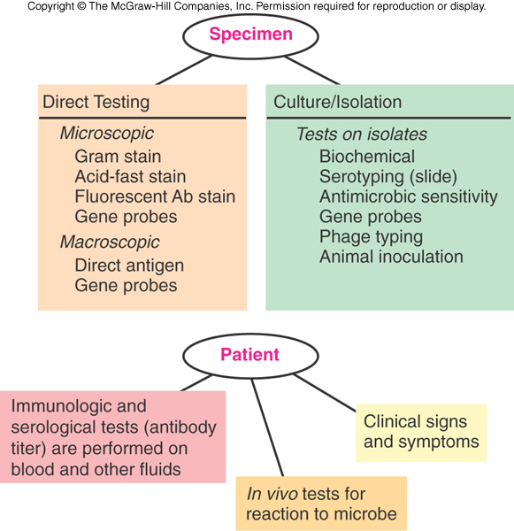
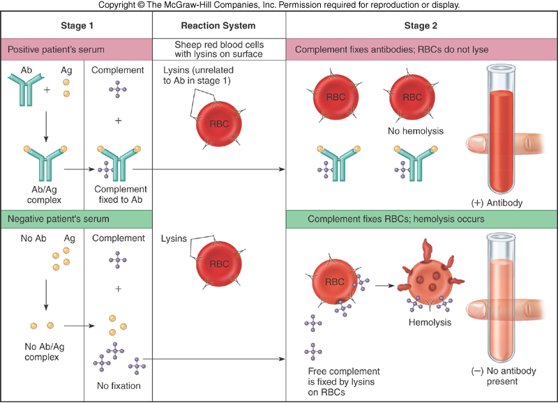
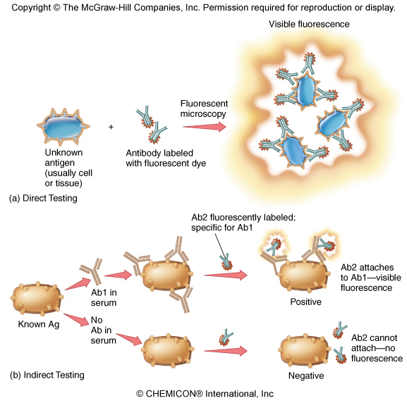
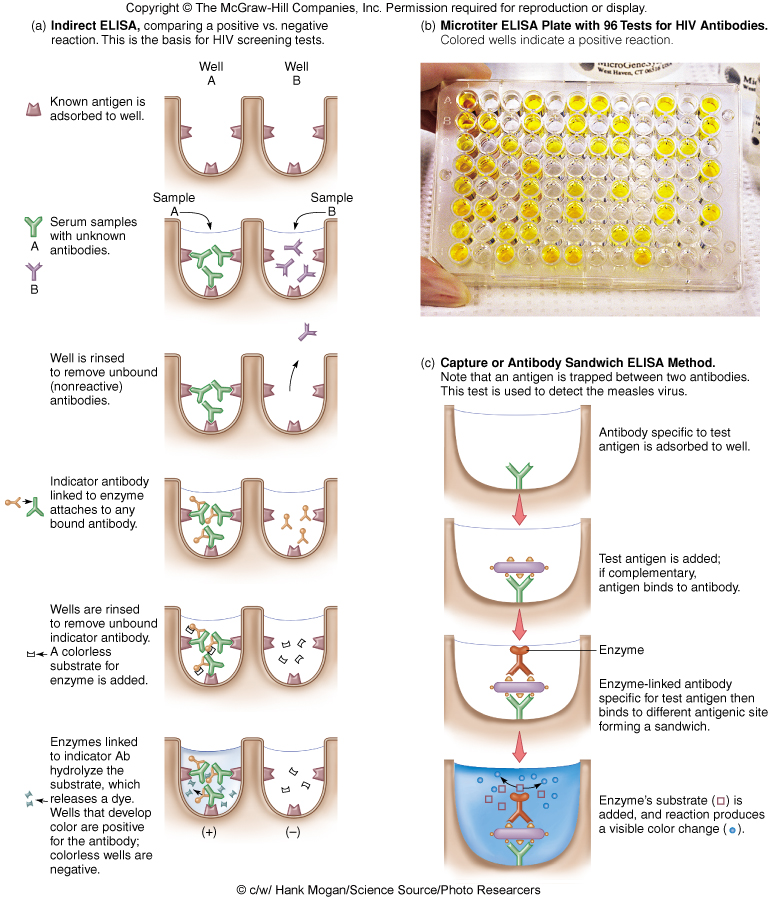

7 · Disorders in Immunity
Instructional Objectives
- Describe the types of immunopathologies.
- Compare and contrast the types of hypersensitivities and diseases caused by hypersensitivity conditions.
- Describe the primary methods of diagnosing, treating, and preventing allergies.
- Describe the mechanism of transfusion reactions.
- Explain the immunology of transplantations and tissue histocompatibility.
- Describe etiology autoimmune conditions.
- Differentiate between primary and secondary immunodeficiency conditions.
- Explain the mechanisms of carcinogenesis.
- Compare and contrast immunotherapy strategies.
About 97 minutes with Dr. Webster, in two parts. Read from one transcript so far (Notability’s own); the second, independent transcription was still running when this guide was built, so the quotes below have not yet been cross-checked against it. Every factual claim was checked against the deck, and where the two differ the slide is what this guide teaches.
Unlike Lecture 1, this lecture signposts. It names one chart to learn, one mechanism that matters most, and five slides not to memorize.
| What was said | What it means for you |
|---|---|
| “This is actually a chart you should pay attention to because it is a very good summary chart of the four different types of hypersensitivities.” [part 1, about minute 10] | Slide 9, the four-types table. It is reproduced in 7.2 and is the spine of the lecture. |
| “The most important thing I want [you] to remember about this is making the IgG [immunoglobulin G] antibodies, which can block the reaction.” [part 1, about minute 34] | Desensitization (slides 29–30). The regulatory T cell effects are real, but the blocking immunoglobulin G is the headline. |
| “Please note there’s no type 1 at all.” [part 2, about minute 13] — and of autoimmunity, “type 1 is not involved in either of these.” [part 2, about minute 21] | Type I plays no part in graft rejection or in autoimmunity. Both lists run II, III and IV. |
| “B cell defect is agammaglobulinemia… we associate [it] with more bacterial infections. And yes, you need to know that. That’s why it is bold and italicized.” [part 2, about minute 32] | B cell deficiency → recurrent bacterial infections; T cell deficiency → fungal, viral and protozoan (slide 63–64). |
| “This is not a chart you need to memorize.” [part 1, about minute 4] | Slide 6, the helminth antigen ↔ allergen pairings. Know the principle (allergens resemble parasite antigens), not the pairs. |
| “You don’t need to memorize this chart.” [part 2, about minute 19] | Slide 50, the four grades of graft versus host disease. Know what the disease is and that it affects about 30% of marrow recipients. |
| “Charts I do not want you to memorize… no, you do not need to memorize those charts.” [part 2, about minutes 29–30] | Slides 58–60, the type II, III and IV autoimmune disease tables. The diseases you are expected to know are the ones slide 61 writes out: Graves’, Hashimoto’s, type 1 diabetes, myasthenia gravis, multiple sclerosis. |
| “The process of transformation… I’m not going to ask you to memorize the sequence.” [part 2, about minute 37] | Slide 67’s stepwise colon-cancer figure. Know that a cancer is one cell with accumulated mutations, not the order of the genes lost. |
| Oncogenic viruses: “we will talk about the papilloma virus… hepatitis B and Epstein-Barr when you have my lecture on DNA [deoxyribonucleic acid] viruses. Dr. Fair will talk about… the human T cell leukemia virus as well as HIV [human immunodeficiency virus] and some herpes viruses.” [part 2, about minutes 38–39] | Slide 68 is deferred to the virus lectures. Here, know that viruses are one route to oncogene activation, and the two that slide 81 names for prevention. |
Things said that are not on a slide — consistent with the deck, useful as hooks:
- Immunoglobulin G is the only antibody that crosses the placenta, which is why a sensitized Rh-negative mother’s next Rh-positive baby is the one at risk.
- The tuberculin skin test is read at 48 to 72 hours, and once positive it stays positive because of memory cells.
- Poison ivy oil binds the skin within about 15 minutes (wash it off before then), and the first exposure takes 7 to 10 days to make effector T cells — by which time the exposed skin has shed, so the first contact produces no rash.
- Blood type O is the universal donor (no A or B antigen on the cell); AB is the universal recipient (no anti-A or anti-B antibody in the serum).
- Bone marrow donors are matched on at least 10 human leukocyte antigen markers, and even that is not always enough to prevent graft versus host disease.
- “Nobody actually dies of HIV [human immunodeficiency virus]. They die of the things you catch because of the suppressed immune system.”
Two things to distrust in the transcript: it has the lecturer describe immune complexes as “a type 2 reaction” at the start of part 2 (slide 38 says type III, and it is type III) and allergy as “IgA [immunoglobulin A] mediated” (slide 23 says immunoglobulin E). Both may be transcription errors; the second transcription will settle it. Go by the slides.
7.1 · Objective 1 — The four immunopathologies
| Immunopathology | What it is | Direction |
|---|---|---|
| Allergy / hypersensitivity | An exaggerated, misdirected expression of immune responses to an allergen (antigen). Uses the same mechanisms as protective immunity. Four types: I, II, III are B cell mediated; IV is T cell mediated | Overreaction |
| Autoimmunity | Abnormal responses to self antigens | Typically overreaction |
| Immunodeficiency | Deficiency or loss of immunity | Underreaction |
| Cancer | Both a cause and an effect of immune dysfunction | Underreaction |

7.2 · Objective 2 — The four hypersensitivities and their diseases
The cells shared by defense and allergy
| Cell | Where / what | Defensive role |
|---|---|---|
| Mast cells | On epithelial surfaces; immunoglobulin E on the surface; filled with cytokine granules | — |
| Eosinophils | Granulocytes that release toxic mediators in an immunoglobulin E response | Eukaryotic parasites |
| Basophils | Rare granulocytes that initiate a type 2 helper T cell response and production of immunoglobulin E | Helminths |
Predisposition. A generalized predisposition to allergy is familial — not a predisposition to a specific allergy. Allergy is affected by age, infection and geographic area; atopic allergies may be lifelong, outgrown, or develop later in life. The four groups are defined by the effector mechanism, and the reaction can differ with the mechanism of exposure.
| Type | Mechanism | Examples |
|---|---|---|
| I Immediate | Immunoglobulin E mediated. Cell-bound antibody is crosslinked and releases inflammatory mediators; mast cells, basophils and eosinophils involved | Hay fever, hives, anaphylactic shock |
| II | Initiated by immunoglobulin G and M. Free antibody binds cell surface antigens; complement activated; cell lysis by the membrane attack complex and phagocytosis | Transfusion reactions |
| III | Initiated by immunoglobulin G and M. Free antibody binds soluble antigens forming immune complexes, which embed in basement membranes and start inflammation (phagocytosis and complement) | Serum sickness; autoimmune conditions such as lupus |
| IV Delayed | T cell mediated. Cytotoxic cells destroy tissue | Contact dermatitis |
Allergens and the type I mechanism
Allergens are immunogenic: proteins, or lower molecular weight haptens. They typically enter through epithelial portals — respiratory, gastrointestinal, skin — and the organ where the allergy shows may or may not be the portal of entry.
| Dose | What happens |
|---|---|
| Sensitizing dose (first contact) | Specific B cells form immunoglobulin E, which attaches to mast cells and basophils. Generally no signs or symptoms. |
| Provocative dose (later contact) | The same allergen binds the immunoglobulin E on the mast cell (each cell binds 10,000–40,000 immunoglobulin E); mast cells degranulate, releasing inflammatory cytokines. |

General targets are the skin, upper respiratory tract, gastrointestinal tract and conjunctiva (rashes, itching, redness, rhinitis, sneezing, diarrhea, tears); systemic targets are smooth muscle, mucous glands and nervous tissue (vascular dilation and constriction changing blood pressure and respiration).
| Manifestation | Mechanism |
|---|---|
| Urticaria (hives) | Mast cells in the skin release histamine → raised, itchy swelling |
| Angioedema | Activation of mast cells deeper in the skin |
| Atopic dermatitis (eczema) | A more prolonged allergic response in the skin |
| Allergic rhinitis (hay fever) | Inhaled allergen; histamine raises capillary permeability and nasal mucus; eosinophils are attracted from blood, release mediators and are shed into the nasal passage |
| Food allergy | Vomiting, diarrhea and urticaria. Local histamine acts on intestinal epithelium, vessels and smooth muscle; urticaria appears because antigen enters blood vessels and is carried to the skin |
| Allergic asthma | Acute: bronchial smooth muscle contraction, more mucus, airway obstruction. Leads to chronic asthma, which is type IV, mediated by cytokines and eosinophil granules |
Anaphylaxis
Cutaneous anaphylaxis is the wheal and flare skin reaction — the one used in allergy diagnosis. Systemic anaphylaxis is sudden respiratory and circulatory disruption that can be fatal in minutes. Allergen and route vary: bee stings, antibiotics and serum by injection; foods such as peanuts by mouth. The allergen reaches the bloodstream and activates connective tissue mast cells around blood vessels throughout the body. Fluid leaves the blood → drastic fall in blood pressure → tissue swelling → organ damage → death by asphyxiation from constricted airways; 500–1000 deaths a year in the United States.

Late phase reaction. Immunoglobulin E reactions have an immediate response (the wheal and flare, from mast cell degranulation) followed about 6 hours later by a late phase reaction mediated by synthesized products such as leukotrienes. It attracts more cells, including eosinophils, whose cytokines enhance inflammation and make the tissue more sensitive next time. In asthma, measured as forced expiratory volume in 1 second, the immediate response is under 1 hour and the late phase response over 6 hours.
Types II, III and IV and their diseases
| Type | Key features | Diseases |
|---|---|---|
| II | Lyses foreign cells; immunoglobulin G or M; stimulates complement | Transfusion reactions (ABO); Rh factor — hemolytic disease of the newborn; some autoimmune: autoimmune hemolytic anemia, myasthenia gravis (acetylcholine receptors) |
| III | Immunoglobulin G and M (sometimes A) with complement; complexes deposit in basement membranes of epithelial tissues; needs a large amount of antigen; symptoms delayed hours to days; joints, skin and kidney typical | Serum sickness (foreign animal proteins — horse serum for tetanus, animal hormones or drugs; complexes in heart, kidneys, skin, joints). Arthus reaction (localized dermal vasculitis after a second vaccine injection at one site; self-limiting). Autoimmune: post-streptococcal glomerulonephritis, systemic lupus erythematosus, rheumatoid arthritis |
| IV | Delayed; T cell mediated; activation of and damage by T cells | Infectious allergy (tuberculosis, leprosy, syphilis, histoplasmosis, toxoplasmosis, candidiasis); tuberculin skin test; contact dermatitis from plants, metals, cosmetics; graft rejection |
Contact dermatitis follows the same two-dose logic as type I, but with T cells: first contact is the sensitizing dose; later contact is the reactive dose, with tissue damage from macrophage cytokines and cytotoxic T cells.
7.3 · Objective 3 — Diagnosing, treating and preventing allergies
First decide whether the patient has allergy or infection. Then:
| Test | Use |
|---|---|
| Skin testing — skin prick, intradermal | Reads wheal and flare reactions |
| Blood tests | Specific immunoglobulin E; increased basophils |
| Physician-supervised challenge | Food allergy when other tests are inconclusive |
| Patch test | Contact dermatitis (type IV) |
Management of type I hypersensitivity has three general methods: prevention, pharmacological control and desensitization. Prevention means modifying the environment and behaviors to avoid the allergen.
| Drug | Action |
|---|---|
| Corticosteroids | Inhibit lymphocytes to reduce immunoglobulin E |
| Cromolyn sodium | Blocks mast cell degranulation |
| Montelukast sodium | Blocks leukotriene synthesis |
| Omalizumab | Monoclonal antibody against immunoglobulin E |
| Antihistamines | Bind histamine receptors on target organs |
| Epinephrine | Reverses airway constriction; re-establishes endothelial tight junctions |
Desensitization (allergen-specific immunotherapy). The most common form is subcutaneous immunotherapy: small amounts of allergen by injection. The injected allergen stimulates high levels of allergen-specific immunoglobulin G that blocks the allergen from reaching the immunoglobulin E, so mast cells do not degranulate. It improves reactions in about 80% of those who complete it.
“Of course it’s not that simple”: desensitization also activates regulatory T cells, which inhibit T cell activation of B cells and release anti-inflammatory cytokines, and induces mediators that damp T cell proliferation and mast cell and eosinophil activity. Sublingual immunotherapy places allergen under the tongue as a tablet or liquid; it is used more elsewhere than in the United States (which has tablets for pollen and dust mite). A 4-year trial of a peanut dose equal to 1/75 of a kernel was effective and safe, protecting against accidental exposure; it has also worked for kiwi, hazelnut, milk and peach.
7.4 · Objective 4 — The mechanism of transfusion reactions
A transfusion reaction is type II. Donor and recipient are matched for the ABO blood group antigens because red blood cells carry no major histocompatibility complex molecules — ABO is what the immune system sees. You carry antibodies in your serum against the ABO antigens you lack. Transfusions are temporary, and an ABO incompatibility can be fatal through complement activation and cell lysis.
| Step | Detail |
|---|---|
| Cross-match | Recipient’s serum against donor’s red cells. Not the reverse: even whole blood carries too little donor antibody to coat the recipient’s cells densely enough to react |
| Consequences | Red cell destruction → blocked glomeruli, fever, jaundice. Even incomplete complement activation leaves antibody-coated cells for natural killer cells and macrophages |
7.5 · Objective 5 — The immunology of transplantation and tissue histocompatibility
Rejection runs both ways — the host may reject the graft, and the graft may reject the host — and it is governed by the major histocompatibility complex: different grafts succeed to different degrees because of its compatibility.
| Graft | Source |
|---|---|
| Autograft | Self (skin, gum or vein graft) |
| Isograft | Genetically identical twin |
| Allograft | Another member of the same species |
| Xenograft | Another species |
| Solid organ problem | Type | Mechanism |
|---|---|---|
| Hyperacute rejection | II | Preexisting antibody against graft antigens; the graft becomes engorged and purple from hemorrhage and fails |
| Acute rejection | IV | Effector T cells respond to human leukocyte antigen differences between donor and recipient |
| Chronic rejection | III | Months or years later; immune complexes in the graft’s vessel walls thicken them until blood supply fails. Causes failure of more than half of kidney and heart transplants after 10 years or more |
| Graft versus host disease | IV | Donor cells attack host tissue |

| Tissue | Matching requirement | Why |
|---|---|---|
| Cornea (first organ successfully transplanted) | Succeeds even without a human leukocyte antigen match | The eye downregulates T cells, macrophages, neutrophils and complement so inflammation cannot impair vision |
| Liver | Human leukocyte antigens not assessed; ABO blood group is | Architecture and vascularization; hepatocytes carry very little class I and no class II; constant exposure to digestive proteins makes it tolerant |
| Bone marrow | Most sensitive to human leukocyte antigen discrepancies | Used for genetic disorders and cancers. Sensitivity can cause graft versus host disease: systemic, with skin rash, muscle, liver and gastrointestinal involvement, in about 30% of marrow recipients |
Dealing with graft issues: minimize rejection by tissue matching human leukocyte antigens (mixed lymphocyte reaction, tissue typing), and with immunosuppressive drugs — purine analogs, corticosteroids, tacrolimus and cyclosporine, rapamycin (sirolimus).
7.6 · Objective 6 — The etiology of autoimmune conditions
In autoimmunity the immune system has lost tolerance to autoantigens and forms autoantibodies and sensitized T cells against them, destroying self tissue. It involves all hypersensitivity types except type I. There are genetic and gender predispositions: autoimmunities run in families, and women are more likely than men to have them. Disruption can be systemic or organ specific.
| Origin | Mechanism | Examples |
|---|---|---|
| Sequestered antigen theory | Some tissues are immunologically privileged during embryonic growth; damaged later, they release antigens that are attacked | Central nervous system, lens of the eye, thyroid, testes. Trauma to one eye releases intraocular antigens that activate T cells, which attack both eyes (slide 55) |
| Molecular mimicry (a normal immune response) | Foreign and self antigens are similar, so the response cross-reacts | Rheumatic fever (cross-reactive strep antigen; antibodies react with heart tissue); Lyme disease arthritis (Borrelia burgdorferi); reactive arthritis (Shigella, Salmonella, Campylobacter); type 1 diabetes (coxsackie virus A and B, echovirus, rubella) |
| Noninfectious response | Tissue damage without infection | The eye trauma example above |
| Thymic senescence | The thymus is most active in fetal and early neonatal life, then involutes (replaced by fat). Premature thymic aging is characteristic of young people with autoimmune disorders; decreased output may mean less efficient T cell development and more opportunistic infection, cancer and autoimmunity | The mechanism is unclear |
| Disease | Target | Result |
|---|---|---|
| Graves’ disease | Autoantibodies attach to receptors on thyroxine-secreting follicle cells | More thyroxine — hyperthyroidism |
| Hashimoto’s thyroiditis | Autoantibodies and T cells destroy follicle cells | Less thyroxine — hypothyroidism |
| Diabetes mellitus (type 1) | Insulin-producing cells of the pancreas | Reduced insulin |
| Myasthenia gravis | Autoantibodies bind acetylcholine receptors | Pronounced muscle weakness |
| Multiple sclerosis | Myelin sheath damaged by T cells and autoantibodies; may follow Epstein-Barr or a retrovirus | Paralyzing neuromuscular disease |
Slides 58–60 tabulate further type II, III and IV autoimmune diseases with their autoantigens. They were named in the lecture as charts not to memorize.
7.7 · Objective 7 — Primary versus secondary immunodeficiency
Components of the immune response are absent; deficiencies can involve B cells, T cells, phagocytes and complement.
| Primary | Secondary | |
|---|---|---|
| When | Congenital — usually genetic errors | Acquired after birth, from natural or artificial agents |
| Examples | Agammaglobulinemia (B cell defect, no antibodies → more bacterial infections). DiGeorge syndrome (T cell defect; thymus missing or abnormal → fungal, protozoan, helminth, viral infections). Severe combined immunodeficiency (both lymphocyte limbs missing or defective; no adaptive response). Complement and phagocyte deficiencies | Infection and organic disease — the human immunodeficiency virus targets T helper cells, suppressing immunity overall; chemotherapy or radiation; blood cell cancers |

7.8 · Objective 8 — The mechanisms of carcinogenesis
Cancer cells carry genetic alterations that disrupt the normal cell division cycle. Possible causes: errors in mitosis, genetic damage, activation of oncogenes, or retroviruses. Tumors may be benign (nonspreading, self-contained) or malignant (spreading from the tissue of origin to other sites). Immune surveillance keeps cancer “in check.”
Transformation: a cancer arises from a single cell that has accumulated multiple mutations; oncogenes are activated by radiation, chemicals or oncogenic viruses (papillomavirus and cervical carcinoma, hepatitis B virus and liver cancer, among others).
| Necessary characteristics of cancer cells |
|---|
| They stimulate their own growth · ignore growth-inhibiting signals · avoid death by apoptosis · develop a blood supply (angiogenesis) · leave their site of origin to invade other tissues (metastasis) · replicate constantly · evade and outrun the immune response |
| Tumor antigens (more than 1000 identified) | Where found |
|---|---|
| Tumor specific | On tumor cells, not on normal cells. Derived from viral proteins, mutated cellular proteins or amino acid recombinations |
| Tumor associated | On tumor cells and on normal cells in smaller amounts |
7.9 · Objective 9 — Comparing immunotherapy strategies
| Strategy | How it works | Status / use |
|---|---|---|
| Immune checkpoint inhibitors | Block checkpoint proteins binding their partner, preventing the “off” signal so T cells keep killing. Do not kill cancer cells directly | Melanoma, some lung cancers |
| Adoptive cell therapy | Patient’s own cells engineered outside the body and returned | Tumor infiltrating lymphocytes: in development, not approved. CAR-T (chimeric antigen receptor T cells): approved for blood cancers. Chimeric antigen receptor natural killer cells: mostly in trials, including solid tumors |
| Monoclonal antibodies | Diagnosis and elimination of cancer cells; can carry a chemotherapy drug or radionuclide (anti-CD20 plus radionuclide irradiates malignant B cells; anti-CD30 plus auristatin stops lymphoma cells forming a mitotic spindle) | More than 100 approved by the Food and Drug Administration |
| Cytokines | Interleukin 2 (aldesleukin): more cytotoxic T and natural killer cells; interferon alpha: activates natural killer and dendritic cells; growth factors: erythropoietin (red cells), interleukin 11 (platelets) | Interleukin 2: metastatic kidney cancer, melanoma. Interferon alpha: melanoma, Kaposi’s sarcoma, several blood cancers |
| Coley’s toxins | 1890s: bone sarcomas regressed with streptococcal skin infection; mix of killed streptococci and Serratia marcescens | Fell from favor with radiation and chemotherapy |
| Oncolytic viruses | Infect normal and cancer cells but replicate in and lyse only tumor cells; some natural (mumps), others engineered. Challenge: the immune system may clear them first | A few approved; one in the United States, for melanoma |
| Cancer vaccines | Prophylactic — prevent the infection (hepatitis B → hepatocarcinoma; papillomavirus → reproductive cancers). Therapeutic — activate immunity against tumor antigens | Bacillus Calmette-Guérin (weakened tuberculosis organism): bladder cancer. Sipuleucel-T: metastatic, castration-resistant prostate cancer |
Slide 78 also says granulocyte and granulocyte-macrophage colony-stimulating factors “stimulate growth of T cells.” That is the slide’s wording; no quiz question turns on it.
Source: Lecture 7 — Disorders in Immunity (Dr. Webster), Slides 1–81, and the PAJ 5200 syllabus instructional objectives.
8 · Diagnosing Infections
Instructional Objectives
- Recall common infectious agents and the diseases that they cause.
- Recall microbial physiology including metabolism, regulation and replication.
- Describe the mechanisms by which an infectious agent causes disease.
- Describe the epidemiology and transmission of infectious agents.
- Discuss common mechanisms of antimicrobial action and resistance.
- Describe antimicrobial treatment strategies.
- Explain preventative interventions employed to prevent infectious diseases.
45 minutes, both transcripts read and compared; the quotes below appear in both. The recording stops at the break, around slide 43 (“this is a very logical place for us to pause”), so complement fixation, fluorescent antibodies, immunoassays, in vivo testing and viral diagnosis have no audio. The lecture is taught through laboratory anecdote and gives almost no exam steer — the same pattern as this lecturer’s Exam 1 lectures.
| What was said | What it means for you |
|---|---|
| “You don’t have to bog down in a lot of the details… I highlighted some things for you. So blood agar is useful for detecting hemolysis… the take-home message is that the blood agar is useful for detecting hemolysis, especially for pathogenic Gram-positive bacteria like staph aureus or strep pyogenes.” [about minute 18] | The one explicit priority in the recording. Know what each plate is for (slides 17–20) rather than every reagent. Staphylococcus and Streptococcus return in the medically important cocci lecture. |
| Southern, Northern, Western, Eastern: “Southern was the first, was actually a man’s name, DNA [deoxyribonucleic acid]. RNA [ribonucleic acid] is Northern. Western is protein. And then Eastern is carbohydrates or other epitopes.” [about minute 42] | A memory hook for slides 41–42: only “Southern” is a person (Edwin Southern); the other compass points are a joke on his name. |
| Genotypic methods for organisms that are hard to grow: Legionella “you have to use live amoeba”; “tuberculosis, leprosy, again, very, very difficult to grow.” [about minute 9] | Matches slide 8 (Mycobacterium, Legionella): culture-free methods earn their cost on slow or difficult organisms. |
| “This is relevant to Koch’s postulates, but remember, not all organisms will work for Koch’s postulates. So what if the infection turns out to… be viral?” [about minute 27] | Slide 24’s caution: finding an organism is not proof it causes the disease. |
One statement to hold loosely: slide 18 and the recording both say chocolate agar is “mainly used for anaerobic culturing,” and the lecturer describes the candle jar that raises carbon dioxide. Learn it as the slide states it for this exam; it is flagged for review rather than silently changed.
8.1 · Objective 1 — Identifying the agent: the three categories
| Category | What it examines | Needs culture? |
|---|---|---|
| Phenotypic | Observable microscopic and macroscopic characteristics (phenotype = “the physical expression of genes”): morphology, physiology and biochemistry, chemical analysis, sensitivity to antimicrobial drugs | Usually — so may take longer |
| Genotypic | Genetic makeup: deoxyribonucleic acid and ribonucleic acid sequence analysis, restriction fragment length polymorphism, specific gene sequencing to build phylogenies, electrophoresis | Usually not |
| Immunological | Serology — antibody-antigen reactions: agglutination, precipitation, immunoelectrophoresis, complement fixation, immunofluorescence, immunoassays, in vivo allergy testing | May or may not — but always exploits antigen-antibody specificity |

Results come in two categories, presumptive or confirmatory. Immune tests are generally easier (and more accurate) than testing for the microbe itself: the rapid strep test takes 10–15 minutes — but you need a hypothesis first to choose the test (fever, sore throat and pus pockets on the tonsils suggest strep throat).
8.2 · Objective 1 — Genotypic methods
Genotypic methods assess the organism’s genetic makeup and need no culture — valuable for slow-growing Mycobacterium and hard-to-grow Legionella. Precise, automated methods give quick results, and faster, more accurate diagnosis means proper treatment begins in a timely manner.
| Technique | Key facts |
|---|---|
| deoxyribonucleic acid probe hybridization / restriction fragment length polymorphism (“deoxyribonucleic acid fingerprinting”) | Probes complementary to a microbe’s specific sequences bind. Restriction enzymes cut deoxyribonucleic acid into fragments whose lengths differ between organisms |
| Polymerase chain reaction | A thermal cycler amplifies specific pieces of deoxyribonucleic acid or ribonucleic acid; basic concept invented by Kary Mullis and colleagues. Guanine plus cytosine content helps taxonomic determination, not necessarily a specific identification |
| Ribosomal ribonucleic acid sequencing | Compares base sequences to establish relationships: 16S ribosomal ribonucleic acid genes for bacteria (prokaryotes), 18S for eukaryotes; builds phylogenetic trees (slide 29: the oral microflora) |
8.3 · Objective 1 — Serology, agglutination and precipitation
Serology is in vitro diagnostic testing of serum. Antibodies are extremely specific, so the methods are very sensitive. Visible results: precipitates, color changes, or released radioactivity. Tests identify antibody and measure how much is present — the titer, often reported in binding antibody units. A known antigen can test a patient’s serum (serological diagnosis), or known antibody can identify an unknown microbe (serotyping).
| Agglutination | Precipitation | |
|---|---|---|
| Antigen | Whole-cell or insoluble | Soluble, made insoluble by antibody |
| What you see | Large visible clumps that sink | A visible precipitate; needs a gel or liquid matrix |
| Sensitivity | Generally more sensitive than precipitation; run on a card or slide | Very sensitive |
| Uses | Blood typing; rapid syphilis diagnosis; cold agglutinins for mycoplasmas; Weil-Felix test for rickettsial disease; latex agglutination for pregnancy; color-changing rapid strep tests are a modified agglutination technique | Tube precipitation; Ouchterlony double diffusion in agar gel; immunoelectrophoresis identifies which antibody class (immunoglobulin G, M and so on) binds antigen in serum |
8.4 · Objective 1 — Blots, complement fixation, fluorescence, immunoassays, in vivo tests and viruses
| Blot | Detects | Notes |
|---|---|---|
| Southern (about 1975) | Specific deoxyribonucleic acid sequences | The original, invented by Edwin Southern |
| Northern (about 1977) | ribonucleic acid (gene expression) | Oncogenes; transplant rejection |
| Western (about 1981) | Proteins | Electrophoresis then an immunoassay; bands where antibody binds. Second test used to verify human immunodeficiency virus status; also bovine spongiform encephalopathy, Lyme disease, hepatitis B |
| Eastern (about 1982) | Proteins, lipids, carbohydrate epitopes | Post-translational products |


| Method | Key facts |
|---|---|
| Fluorescent antibody testing | A monoclonal antibody labeled with a fluorescent dye shows cells or aggregates, by direct or indirect methods |
| Immunoassays | Extremely sensitive — detect trace amounts of antigen or antibody. Radioimmunoassay: labeled with radioactive isotopes. Enzyme-linked immunosorbent assay: an enzyme-antibody complex produces a colored product (chromogen) when its substrate is added; run in 96-well plates |
| In vivo testing | Antigen introduced into the body to detect antibody or sensitivity: tuberculin skin test, allergy testing |
| Viruses | Special difficulty: they are not cells and need a specific host cell to replicate, so they are labor intensive to culture. Rapid point-of-care tests may use antigen-antibody reactions |

8.5 · Objective 2 — Microbial physiology in the laboratory
Phenotypic identification reads the organism’s physiology and metabolism.
| Method | What it looks at |
|---|---|
| Microscopic morphology | Fresh or stained organisms: cell shape, size, stain reaction (Gram, flagellar, acid-fast), cell structures. Immediate direct examination also uses direct fluorescent antibody and direct antigen testing |
| Macroscopic morphology | Colony appearance on test plates: texture, size, shape, pigment, growth requirements |
| Physiological / biochemical | Presence or absence of particular enzymes or metabolic pathways — product formed means the enzyme is present |
| Chemical analysis | Specific chemical composition: cell wall peptides, cell membrane lipids |
| Common test or medium | What it shows |
|---|---|
| Carbohydrate fermentation, amino acid utilization, hydrolysis of gelatin, starch or lipids, catalase, oxidase, coagulase, hemolysins | The common biochemical tests |
| Blood agar | Detects hemolytic activity |
| Chocolate agar | “Mainly used for anaerobic culturing” (the slide’s wording) |
| Mannitol salts agar | Selects for salt tolerance and differentiates by the pH change of mannitol fermentation |
| Simmons citrate | Citrate utilization; bromthymol blue turns blue as pH rises |
| Triple sugar iron slant | Several pH changes observable on one slant |
| Urea broth | Urea hydrolysis raises pH; hot pink = urease present |
| Rapid test strips (API 20E) | Many biochemical tests on one strip |
| Bacteriophage typing; animal inoculation | Phage susceptibility; growth in an animal (for example Mycobacterium leprae) |
Replication, the last part of this objective, appears once: viruses cannot be cultured like bacteria because they replicate only inside a specific host cell (slide 54).
8.6 · Objective 3 — Is the organism causing the disease?
The deck does not teach disease mechanisms in this lecture. What it does say is the diagnostic form of the question: whether the microbe recovered is actually causing the disease, or whether you are simply detecting normal flora — the reasoning of Koch’s postulates, traditional and molecular (slide 24). Some virulence enzymes are themselves the test: hemolysins on blood agar and coagulase appear among the common tests (slide 17).
8.7 · Objective 4 — Specimens, handling and transmission risk
The deck’s epidemiology here is the specimen itself. All specimens should be considered potentially infectious. Results depend on collection, handling, transport and storage; some specimens need a preservative or fixative, others cooling, heating or other special treatment. Aseptic procedures and universal precautions (gloves, face shields, masks) mitigate but do not eliminate the risk of transmission. Slides 11–12 show collection sites and methods (nasopharynx, throat, sputum, blood, cerebrospinal fluid, urine by clean catch or catheter, feces, skin, genital swabs); a specimen then goes to direct testing or to cultivation, isolation and identification.
8.8 · Objectives 5 & 6 — Antimicrobial sensitivity testing and treatment strategy
The Kirby-Bauer disk-diffusion test gives which drug is effective and at what dose, and may indicate which combinations can be used. Larger zones of inhibition mean a more effective agent. Minimum inhibitory concentration strips add the concentration needed. For treatment strategy the deck’s point is speed: faster, more accurate (genotypic) diagnosis means proper treatment can begin in a timely manner. Mechanisms of action and resistance themselves were Lecture 2’s subject.
8.9 · Objective 7 — Preventative interventions
The deck offers one: aseptic procedure and universal precautions during specimen collection and handling, which mitigate but do not eliminate transmission (slide 10). Vaccination and other prevention are not in this deck.
Source: Diagnosing Infections (PAJ5200.Diagnosing Infections-2.pptx), Slides 1–57, and the PAJ 5200 syllabus instructional objectives.